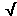
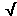

as their hypotenuse gives for the
magnitude a of vector the
expression
as their hypotenuse gives for the
magnitude a of vector the
expression
Answer. Applying the Pythagorean theorem to either one of
the two right-angle triangles in the applet that have vector as their hypotenuse gives for the
magnitude a of vector the
expression
 a = (ax2 +
ay2)
a = (ax2 +
ay2)
 = [(-3.0)2 + 4.02]
= [(-3.0)2 + 4.02]
 = 5.0.
= 5.0.
For angle q we have the equation (see Trig Functions under Get Information)
 tan q = ay
tan q = ay /ax
/ax
whence
 q = tan-1
ay
q = tan-1
ay /ax
/ax